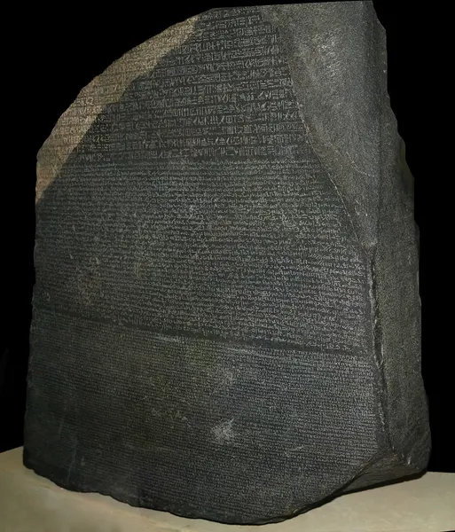
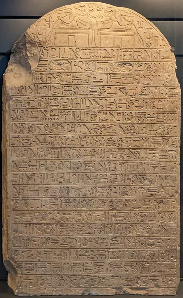
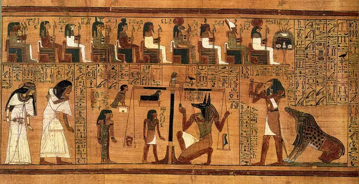
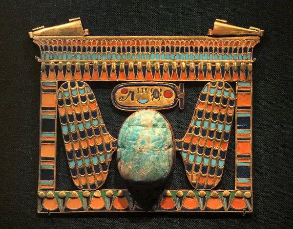

Language & Literature · Ancient Epigraphy · Grades 6–12
Learning Egyptian Hieroglyphs
A Scribe’s House of Life: From Royal Cartouches to the Rosetta Stone
For more than 3,000 years, Egyptian scribes carved and painted a script in which a bird could be a sound, a picture could be a word, and a silent sign could tell you what a word meant. The Greeks called it hieroglyphika grammata, “sacred carved letters.” Egyptians called it mdw nṯr, “the god’s words.” Learn to read it the way Egyptologists do: sign by sign, with evidence.
50–70 minutes Picture vs. job → Scribe’s keyboard → Reading direction → Royal cartouches → Rosetta decipherment → Determinatives → Scribe math → Museum gallery → Evidence check
Your reading mission
Separate picture from job: Explain why a sign shaped like an owl can stand for the sound m and have nothing to do with owls.
Use the 24 one-consonant signs: Type words and names with the uniliteral signs from Gardiner’s sign list.
Find the starting edge: Apply the rule “read into the faces” to lines and columns in any direction.
Decode royal names: Read cartouches of Tutankhamun, Hatshepsut, Ramesses II, Ptolemy V, and Cleopatra, then build your own.
Reason like a decipherer: Repeat the sign comparison that let Thomas Young and Jean-François Champollion crack the script.
Weigh evidence: Separate what an object shows from what a museum record or a later theory claims.
Predict: Must a picture-shaped sign always mean the object it shows? If Egyptian writing had no letters for vowels, how could a reader tell apart two words with the same consonants? Discuss before you open the sign bank.
1 · Picture vs. Job: The Three Jobs of a Hieroglyph
Hieroglyphs recorded the Egyptian language, but the script was never a set of picture-messages. Every sign looks like something (a mouth, an owl, a loaf of bread), yet each sign does a job in a word. Egyptologists sort those jobs into three kinds.
𓅓
1. Phonograms (sound signs)
The sign stands for one, two, or three consonants. The owl means m; the gaming board 𓏠 means mn; the ankh 𓋹 means ꜥnḫ. Vowels were normally not written.
𓉐𓏤
2. Logograms (word signs)
The sign means the thing it shows. A house plan with a single stroke, 𓉐𓏤, reads pr, “house.” The stroke says, in effect, “take this picture literally.”
𓀀
3. Determinatives (silent meaning signs)
The sign was written but not spoken. It comes at the end of a word to show its category: a seated man for men’s names and jobs, walking legs for motion, a papyrus roll for ideas and writing.
rn, “name.” A mouth and a water ripple spell the consonants r and n. If you read the pictures literally (“mouth, water”), you would miss the word. Egyptologists pronounce it “ren”; the e is a modern reading aid, not an ancient vowel. Tap to enlarge. ClassroomOS teaching diagram using Noto glyph outlines · Noto fonts by Google, SIL Open Font License 1.1Sign, transliteration, translation: three things that are easy to mix up
Sign: the hieroglyph itself, e.g. 𓂋𓈖.
Transliteration: a scholar’s letter-for-sign code, e.g. rn. Special letters like ꜣ, ꜥ, ḥ, ḫ, ẖ, š, ṯ, ḏ mark Egyptian sounds English does not have.
Translation: the meaning in another language, e.g. “name.”
Each sign in this lesson also has a Gardiner number (like D21 or N35). Sir Alan Gardiner sorted signs by what they depict, with D for parts of the human body and N for sky, earth, and water. Egyptologists still use his 1927 list.
2 · The Scribe’s Keyboard: The 24 One-Consonant Signs
About two dozen hieroglyphs stand for a single consonant. Egyptologists call them uniliterals. They are not a separate alphabet: scribes mixed them with two- and three-consonant signs, word signs, and determinatives. But they are the best place for a new reader to start.
Select any key to inspect it and write it on your scribe’s line. Latin labels are transliterations, not English spellings.
Extra signs:
Choose a key to reveal its sound, picture, and Gardiner number.
Your scribe’s line · reed pen on papyrus0/16 signs
No signs written yet.
Word missions
Each target below is a real Egyptian word spelled only with uniliterals. Write it on your line, then check. A correct answer reveals the silent determinative that scribes usually added.
Choose a mission.
Write signs on the line, then check.
Printable sign key: the 24 uniliterals
One-consonant signs (Gardiner numbers)
Sign
Transliteration
Picture
Gardiner
Approximate sound
𓄿
ꜣ
Egyptian vulture
G1
glottal stop; often read “a”
𓇋
j (also ỉ)
flowering reed
M17
“i” or “y”
𓂝
ꜥ
forearm
D36
deep throat sound (ayin); often read “a”
𓅱
w
quail chick
G43
“w” or “u”
𓃀
b
foot
D58
“b”
𓊪
p
stool
Q3
“p”
𓆑
f
horned viper
I9
“f”
𓅓
m
owl
G17
“m”
𓈖
n
water ripple
N35
“n”
𓂋
r
mouth
D21
“r”
𓉔
h
reed shelter
O4
“h”
𓎛
ḥ
twisted flax wick
V28
strong, breathy “h”
𓐍
ḫ
placenta (?)
Aa1
“kh,” as in Scottish loch
𓄡
ẖ
animal belly and tail
F32
softer “kh,” as in German ich
𓊃
z (also s)
door bolt
O34
“z”; later merged with s
𓋴
s
folded cloth
S29
“s”
𓈙
š
pool
N37
“sh”
𓈎
q (also ḳ)
hill slope
N29
“k” made far back in the throat
𓎡
k
basket with handle
V31
“k”
𓎼
g
jar stand
W11
hard “g”
𓏏
t
bread loaf
X1
“t”
𓍿
ṯ
tethering rope
V13
“tj” or “ch”
𓂧
d
hand
D46
“d”
𓆓
ḏ
cobra
I10
“dj,” as in judge
Sound values are modern conventions. Egyptologists reconstruct them from Coptic, Greek spellings of Egyptian names, and related languages, and some remain debated.
3 · The Reading Direction Engine: Read Into the Faces
Hieroglyphs could run left to right, right to left, or down in columns. Scribes chose the direction to suit a wall, a doorway, or a statue. The reader’s clue is in the signs themselves: people, animals, and birds face the beginning of the line. You start at the side they face and read into their faces. Columns are read from top to bottom.
→
The falcon and cobra face left, so begin at the left and read toward the right.
Notice: when the direction flips, every sign mirrors, not only the animals. Unicode and most modern books print hieroglyphs facing left, reading left to right, for convenience. Original monuments often face the other way.
Practice drill: Which edge do you start from?
Each line below uses real words from this lesson in a random layout. Decide where a reader begins.
Look for a creature’s face, then choose.
Score: 0 of 0
Want to see it on a real monument? Open the Stela of Minnakht in the gallery: the two jackals and the two eyes at the top face each other across a central line, so the two halves are mirror images.
4 · The Royal Cartouche Studio
A king’s two most important names were written inside an oval loop that Egyptians called a shenu (from šnj, “to encircle”). It is a rope tied at one end, which shows the ruler as lord of everything the sun encircles. Napoleon’s soldiers thought it looked like a gun cartridge, cartouche in French, and the name stuck.
Choose a royal name. Select any sign inside the loop to see its job, then switch between the order it was written and the order it was read.
Tutankhamun
Select a sign in the cartouche.
Why is a god’s name written first but read last? (Honorific transposition)
Scribes moved the names of gods (Amun, Ra) and words like “king” to the front of a group as a mark of respect, even when grammar put them later. Readers had to know to move them back. This is why Tutankhamun’s name begins with Amun’s signs but is read twt-ꜥnḫ-jmn, and why Egyptologists sometimes argue about the order of royal names. Ramesses is the useful contrast: Rꜥ-ms-sw really begins with Ra, so its written order and reading order agree.
Custom Name Cartouche Builder
Ptolemaic scribes, who wrote under Greek rulers after 305 BCE, spelled foreign names like Ptolemaios, Kleopatra, and Alexandros sign by sign with uniliterals. You can do the same with your name. Choose a spelling rule, then fine-tune the result with the keyboard in Section 2.
Letters with no Egyptian match are replaced by the nearest sound.
Honest limit: This is a modern sound-matching game. No ancient scribe heard your name, and real Ptolemaic spellings vary from temple to temple. Egyptian had no letter for “l” until scribes borrowed the lion for Greek names, and English vowels have no exact match. A useful question for discussion is which sounds were hardest to fit, and why.
5 · The Rosetta Stone Decipherment Lab (1799–1822)
By the 5th century CE, knowledge of how to read hieroglyphs had died out. The last dated hieroglyphic inscription was carved at the temple of Philae in 394 CE. For 1,400 years, scholars guessed that the signs were mystical symbols with no sounds at all, and they were wrong.

The Rosetta Stone, British Museum EA 24. One decree of 196 BCE, carved three times: hieroglyphs at the top (mostly broken away), Demotic in the middle, Greek at the bottom. Scholars could read the Greek, so the stone offered a key. Photo: Hans Hillewaert via Wikimedia Commons · CC BY-SA 4.0
French soldiers rebuilding a fort near Rashid (Rosetta) find the stone. After the French surrender, it goes to the British Museum in 1802.
British physician Thomas Young proposes that cartouches hold royal names. He matches one cartouche to ΠΤΟΛΕΜΑΙΟΣ (Ptolemaios) in the Greek and assigns some signs correct sounds.
A second bilingual, the obelisk William Bankes brought from Philae, names a queen Kleopatra in Greek. Champollion obtains a copy of its hieroglyphs.
Champollion compares the two cartouches, extends the system to native Egyptian names like Ramesses and Thutmose, and presents his Lettre à M. Dacier in Paris.
His Précis shows that the whole script mixes sound signs with meaning signs. His knowledge of Coptic, the last stage of Egyptian, is crucial.
Your turn: compare two royal names
Step 1 · Match shared signs. Both Greek names share the sounds P, O, L, and an E or I. Select a sign in Ptolemaios, then the sign in Kleopatra you think records the same sound.
ΠΤΟΛΕΜΑΙΟΣ · Ptolemaios Rosetta Stone
ΚΛΕΟΠΑΤΡΑ · Kleopatra Philae obelisk
Select a sign in the Ptolemaios cartouche to begin.
Step 2 · The puzzle of T. Both names contain a T. In Ptolemaios it is the bread loaf 𓏏. In Kleopatra the T position holds a hand 𓂧. What should a decipherer conclude?
Step 3 · Test the key on a new cartouche. Champollion checked his values on names he had not used to build them. Use your decoded key to identify this ruler.
Decipherer’s rule: A guess becomes a reading only when the same values work across independent texts. Young and Champollion argued over credit, but each check on a new name made the system stronger.
6 · Determinative Detective: Same Consonants, Different Words
Because vowels were not written, many different words share the same consonant skeleton. English has a similar problem: bass the fish and bass the guitar look identical. Egyptian scribes solved it by adding a silent determinative at the end of the word. It is never pronounced, but it tells the reader which word was meant.
Explore one stem: wn
The hare 𓃹 stands for wn, and the water ripple 𓈖 confirms the n. Add each determinative and watch the meaning change.
𓃹𓈖?
wn with no determinative: the reader has to rely on grammar. These same two signs also write forms of the verb “to be” (wnn).
Detective challenge
Read the clue, then choose the determinative that finishes the word correctly.
Case 1 of 6
?
Common determinatives to look for
Frequent determinatives (silent meaning signs)
Sign
Picture
Category it signals
𓀀
seated man (A1)
men, men’s names, occupations
𓁐
seated woman (B1)
women, women’s names
𓀁
man with hand to mouth (A2)
eating, speaking, thinking, feeling
𓂻
walking legs (D54)
movement
𓏛
papyrus roll (Y1)
writing, abstract ideas
𓅪
sparrow (G37)
small, bad, weak, wrong
𓉐
house plan (O1)
buildings and places
𓊖
crossroads in a town (O49)
towns and cities
𓈉
hill country (N25)
foreign lands, desert
𓀭
seated god (A40)
gods, the king
7 · Scribe Mathematics: Numerals and the Eye of Horus
Egyptian scribes ran a grain-based economy. They counted workers, measured fields after the Nile flood, and paid wages in bread and beer. Two systems help us see how they thought: whole-number hieroglyphs and the grain fractions later linked to the Eye of Horus.
Hieroglyphic numerals: base 10, no place value
Unlike Mesopotamian base-60 cuneiform, Egyptian numerals were decimal and additive. Each power of ten had its own sign, repeated up to nine times. There was no zero and no place value: you could rearrange the signs and the number stayed the same.
𓏤1 · stroke𓎆10 · cattle hobble𓍢100 · coil of rope𓆼1,000 · lotus𓂭10,000 · finger𓆐100,000 · tadpole𓁨1,000,000 · god Heh
The wedjat eye and the grain fractions
Grain was measured in a unit called the hekat, roughly 4.8 liters. Scribes wrote parts of a hekat with special signs for ½, ¼, ⅛, 1/16, 1/32, and 1/64. Since 1911, many books have taught that each sign is a piece of the wedjat, the Eye of Horus. Select the pieces to fill the grain measure.
0/64 of a hekat
Granary challenge:Measure exactly 13/64 of a hekat.
Select eye pieces that add up to the order.
Add all six pieces and you get 63/64, not a whole hekat. A popular story says the god Thoth, who healed Horus’s torn eye in Egyptian myth, supplied the missing 1/64. Every amount from 1/64 to 63/64 has exactly one combination of pieces, the same idea as binary numbers in a computer.
Check the evidence: The myth of Horus’s eye, torn by Seth and healed, is ancient. The claim that the fraction signs came from the eye is modern. Egyptologist Georg Möller proposed it in 1911, and Alan Gardiner’s grammar spread it. In 2002, historian of mathematics Jim Ritter traced the hieratic fraction signs back to the third millennium BCE. The further back he looked, the less they resembled an eye. The “missing 1/64 restored by Thoth” story has no ancient source. Most scholars now think later scribes linked existing grain signs to the eye, not the other way around. The binary arithmetic is real; the origin story is a hypothesis that failed its test.
8 · Archaeological Gallery: Read the Object Before the Words
Each object below survives in a museum collection. Enlarge the photograph, make an observation, and test it against the evidence. Ask what you can see for yourself and what you must take from the museum record or a translation.
196 BCE · British Museum EA 24The Rosetta Stone. A priestly decree honoring Ptolemy V, carved in two languages and three scripts: hieroglyphic and Demotic Egyptian, plus Greek. Look at the broken top edge: most of the hieroglyphic section is lost, so the decipherers had only 14 incomplete lines. Photo: Hans Hillewaert via Wikimedia Commons · CC BY-SA 4.0
Observe
Can you see where one script ends and the next begins? Which band is most complete?
Check the museum evidence
The British Museum record describes a granodiorite stela inscribed with a decree of the priests at Memphis. The same text appears in each script, which is why the Greek could anchor the comparison. Copies of the decree on other stelae later helped fill the gaps.

c. 1325 BCE · Louvre C 55Stela of Minnakht, chief of the scribes, reign of Ay. Two jackals and two wedjat eyes mirror each other at the top. Below, the text runs in horizontal rows. Look for two ovals in the second row: they are cartouches, and the signs inside are hard to make out. Photo: Shonagon via Wikimedia Commons · CC0
Observe
Find a bird or person in a row of text. Which way does it face, and so which edge does the row begin from? Why might a carver mirror the top scene?
Check the museum evidence
The Louvre catalogs this limestone stela from Akhmim as made for Minnakht, a senior scribe, in the reign of Pharaoh Ay (c. 1327–1323 BCE). The mirrored lunette is a common design choice: each half reads toward the center. The worn cartouches should be named for Ay, but the photograph alone cannot say whether they were weathered or deliberately erased. Ay’s names were attacked on other monuments after his death, so that is a question to investigate, not a conclusion.

c. 1250 BCE · British Museum EA 10470/3The Weighing of the Heart, Book of the Dead of Ani. Anubis weighs Ani’s heart against the feather of Maat (truth). Thoth, the ibis-headed god of writing, records the result, and the monster Ammit waits. The columns of text read in the direction the figures face. Photographed by the British Museum via Wikimedia Commons · Public domain
Observe
Find Thoth holding a scribe’s palette. Why might the god of writing be the one who records the verdict? Compare these painted signs with the carved ones on the Rosetta Stone.
Check the museum evidence
The British Museum record identifies this as a sheet from the Book of the Dead made for the scribe Ani, from Thebes, 19th Dynasty. Funerary papyri used a cursive form of hieroglyphs written in ink with a reed brush. The scene’s meaning comes from the spells written around it (Spell 125), not from the pictures alone.

c. 1330 BCE · tomb KV62, Egyptian Museum, CairoPectoral of Tutankhamun with a winged scarab. Above the scarab sits a horizontal cartouche with his throne name, Nebkheperure. Look for the sun disk (rꜥ), the scarab (ḫpr), three plural strokes (w), and the basket (nb). Photo: M. Strasser via Wikimedia Commons · CC BY-SA 2.0
Observe
Compare the cartouche with Nebkheperure in the Cartouche Studio. Which signs match? Is there a sign you cannot yet identify?
Check the evidence
Objects from Tutankhamun’s tomb, found by Howard Carter’s team in 1922, carry his names over and over. The scarab, a beetle that rolls a ball of dung, stood for the sun god as Khepri, “he who comes into being.” The same ḫpr sign appears inside the king’s name, so the jewel repeats the name as a picture. Gold and inlays survive; the meaning comes from comparing many inscribed objects.
Epigrapher’s rule: Direction, layout, and familiar signs give you clues. A full reading needs grammar, a dictionary, the object’s history, and often more than one photograph.
9 · The Life of a Scribe: Four Scripts, One Language
Probably only a small part of Egyptians could read. Scribes trained for years in a temple or palace school, copying model texts on wood boards and limestone flakes called ostraca. A popular school text, the Satire of the Trades, told boys to “be a scribe” because every other job was dirty, dangerous, or exhausting.
Hieroglyphic
Carved or painted signs for temples, tombs, statues, and royal monuments. Used from about 3200 BCE to 394 CE.
Hieratic
A fast, joined-up form written in ink with a reed brush on papyrus. Used for letters, accounts, and the great mathematical papyri such as the Rhind Papyrus.
Demotic
An even more cursive script, from about 650 BCE, used for everyday documents. It is the middle text on the Rosetta Stone.
Coptic
The final stage of Egyptian, written in Greek letters plus a few signs from Demotic. It was still used in Coptic church services in Champollion’s day, which helped him decipher the script.
Tools of the trade: a palette with cakes of black (soot) and red (ochre) ink, a water pot, and reed brushes. Scribes used red ink to start new sections and to mark corrections. Look for the palette in the hands of Thoth in the Papyrus of Ani.
10 · Evidence Check & Scribe’s Exit Ticket
Answer five questions using evidence from the lesson. You can change your answers.
Question 1: Picture vs. job
In the word 𓂋𓈖 rn, “name,” what job do the mouth and water signs do?
Question 2: Reading direction
In a row of hieroglyphs, the owl and the seated man face right. Where do you begin reading?
Question 3: Decipherment logic
Why was comparing the Ptolemaios and Kleopatra cartouches so powerful?
Question 4: Determinatives
𓃹𓈖𓉿 and 𓃹𓈖𓂻 share the consonants wn. How does a reader tell them apart?
Question 5: Weighing a claim
What is the best evidence-based statement about “Eye of Horus fractions”?
Scribe’s Reflection
Your writing auto-saves in this browser. Use the Print Lesson button in the header to save a PDF copy for your portfolio.
From Screen to Stone: Hands-On Workshop
Roll air-dry clay into a slab or cut an oval from cardstock. Press a rope or draw a double line around the edge, tied at one end, to make your shenu.
Spell your name with the Cartouche Builder. Choose a direction and make sure every creature faces the start of your name.
Carve the signs with a wooden skewer, or paint them in black ink. Use red only for the first sign, the way scribes marked a new section.
Swap with a partner. Can they find the starting edge and transliterate your name using only the sign key?
Teacher Guide & Exit Ticket Rubric
Lesson timing (50–70 min):
5 min: Predict, then Section 1 on picture vs. job.
10 min: Scribe’s keyboard and word missions.
5 min: Reading direction engine and drill.
10 min: Cartouche studio, famous names and name builder.
10 min: Rosetta decipherment lab.
5 min: Determinative detective.
10 min: Numerals, grain fractions, and the evidence check on the Eye of Horus.
5–15 min: Gallery observations, quiz, and reflection.
Differentiation: For younger readers, focus on the keyboard, direction drill, and name cartouche. For older students, assign the Rosetta lab and the Eye of Horus evidence box as a short argument-writing task: “What would count as evidence for or against the eye-origin theory?”
Exit ticket success criteria:
Distinguishes a sign’s picture from its job (phonogram, logogram, determinative).
Identifies the starting edge of a line from the direction signs face.
Explains honorific transposition with one royal name.
Describes how shared signs in two cartouches confirmed sound values.
Separates an ancient fact (halving grain fractions) from a modern theory (eye origin).
Alan H. Gardiner, Egyptian Grammar (3rd ed., 1957): the sign list behind the Gardiner numbers. Raymond O. Faulkner, A Concise Dictionary of Middle Egyptian (1962): source for the wn determinative examples.
Jim Ritter, “Closing the Eye of Horus: The Rise and Fall of ‘Horus-eye Fractions’,” in Under One Sky: Astronomy and Mathematics in the Ancient Near East (2002): the study that challenged the eye-origin theory.
Font license · SIL Open Font License 1.1: the local Noto Sans Egyptian Hieroglyphs font renders every sign without an external font service. Its outlines are modern standardized forms, not tracings of a particular inscription.